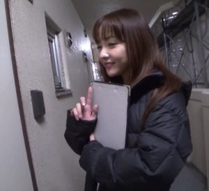

Chuyện Về Bé Ngọc Dâm – Truyện Người Lớn Ngắn Hay

– Sụyt.đừng lớn tiếng qúa,ổng nghe …
– Sợ cái gí chứ,ổng say như chết,chờ lâu thấy mồ,tuy nói vậy nhưng giọng nói nhỏ lại .Hùng bước tới đẩy Ngọc dựa vô tường, không biết nó ở truồng từ lúc nào,chỉ mặc cái áo T shirt phủ lưng chừng mông,con cu đang kích dục cứng ngắc chỉa thẳng ra ngoài.Ngọc vừa dựa lưng đụng tường nàng ưởn người ra phía trước…bựt bựt bựt,thằng Hùng đưa tay giựt mạnh khiến hai hàng nút bóp bung mạnh,cặp vú đồ sộ phơi bày dưới ánh sáng mờ mờ phát ra từ ngọn đèn dội vô căn phòng trông thật hấp dẩn làm sao, Hùng nuốt nước bọt,cúi xuống bú liếm hết vú nầy qua vú nọ,hai tay nó luồn vô quần xoa bóp loạn xạ.Hùng liếm từ từ tới rún , nó qùi xuống,kéo theo cái quần lẩn cái quần lót.Một mãn lông đen lồ lộ có dấu tích được cắt tĩa kỹ lưỡng nên không có vẽ bùi xùi.Hùng úp mặt vô ,nó cắn nhẹ,lên cái gò thịt mềm mại rồi liếm hai bên vùng tam giác,lưởi nó rà tới đâu,Ngọc giật nẩy người tới đó,nàng hẩy người lên ,chân trái gát lên lưng Hùng,tạo cho cái lưởi nó dể bề xâm nhập vùng cấm địa đang từ tù ươn ướt .Ngọc nói trong hơi thở đứt đoạn:
– Sưưướớớnng ,.má …sướng quá Hùng ơi….Ahh..Cùng theo tiếng rên ,người Ngọc giựt giựt,trân người run run hay tay ghịt đầu thằng con càng ví sát vô l… mình chặc hơn…
Cái miệng nhỏ của Ngọc giờ đang ngậm trọn con cu mà nút,chốc chốc nàng lấy lưỡi làm massage quanh cái đầu con cu sần sùi tím ngắt của Hùng,chốc chốc nó lại ghì lấy tóc Ngọc mà nắc vô miệng nàng.Cặp kiếng trắng trên mặt Ngọc đôi khi kích dâm Hùng tột độ ,không hiểu vì sao, nhiều lúc nhìn Ngọc trong trường với vẽ đạo mạo qua cặp kính đó,nó nứng lên muốn đè Ngọc xuống đút vô cái miệng xinh kia mà nắc rồi xịt đó cho đã” và nó đã xịt nhiều lần như vậy mà vẫn chưa thỏa mãn,có lần khí đục bắn mờ cả tròng kiếng,có lần nửa ra trong miệng nữa tung tóe đầy mặt trông thật “man dại” .Thật ra cái nó đang làm chỉ là học hỏi được từ mấy cái phim con heo mà thôi .Mổi lần Hùng mướn về,hai mẹ con coi xong rồi thì cứ thế mà làm.Phải nói có những cảnh nào trong phim xxx nào mà hai mẹ con chưa thử qua? .

Ba Hùng thường xa nhà vì công chuyện làm ăn,những lúc ở Saigòn thì lại phải xã giao nên thường trực chỉ có hai mẹ con ở nhà.Ngọc là một giáo sư cấp trung học,lẽ ra nhà khá giả, nàng có thể không đi làm nhưng nghĩ lại ở nhà nhàn rổi dể buồn chán nên Ngọc vẫn đi dạy,hơn nữa tiện thể trông chừng thằng Hùng kẽo nó hư.hoang đàng chi địa.Thường được đánh gíá là một giáo sư mẫu mực,được các bạn đồng nghiệp kính nể.Có ai ngờ sau cái vẽ đạo mạo,nghiêm trang đó là cã một lò lữa của dục tình bừng cháy.Từ lúc hai mẹ con loạn luân với nhau thì khi cái cửa nhà đóng lại là thằng Hùng đè má nó ra mà làm tình,Hùng tuổi trẻ sung sức lại thuộc loại dâm dục nên cứ đòi hỏi hoài hoài.Ngọc cũng chỉ mới xấp xỉ 40,tràn trề sinh lực nhưng cã một năm dài đăng đẳng bị lãng quên,bó xó nên sa ngã trước sự đòi hỏi của xác thịt ,mà một khi đã trót thì trét luôn, không còn e ấp gì nửa.Ngọc buông thả theo những đòi hỏi dâm dục của thằng con và nàng thấy thỏa mãn…Ngoài xã hội,nàng là má nó,trong lớp nàng là cô giáo mẩu mực và tối đến những đêm Lâm không có ở nhà thì trong phòng hai vợ chồng nàng chổ nằm của Lâm là của Hùng,ngay cả khi Lâm có nhà cũng vậy,hai mẹ con vẫn lén lúc làm tình cuồng nhiệt như là đêm nay.
Hùng bồng má nó như bợ thúng,hai chân Ngọc cặp chặt vòng eo ,hai tay nàng quàng qua cổ nó ,Hùng thì nắc lia lịa,Ngọc đầu ngửa ra phiá sau,mắt ngắm nhiền đê mê hưỡng thu từng cú dập mạnh bạo,môi mím lại cố kiềm hảm những tiếng rên rĩ ,sợ Lâm trên lầu nghe .Cặp vú đung đưa theo nhịp nắc trông thật dâm dật.Lưng Hùng đã bắt đầu lắm tắm mồ hôi nhưng cái nhịp dập vẫn đều đặn,Ngọc cũng phải thầm công nhận thằng con quả thiệt dai sức .Hai mẹ con cứ xà nẹo một hồi lâu bổng Hùng như nổi ốc,nó dí lưng Ngọc vô tường,Ngọc biết nó sắp lên đĩnh,nàng ghịt đầu ,áp môi mình vô miệng nó,hai tay cào cấu tấm lưng nó….nàng cũng lên đĩnh… .
Ngọc lui cui mặc quần xong cài khuy áo,thằng Hùng thì tỉnh bơ,nó vẫn trần truồng như nhộng.Nó nói trõng:
– Chưa gì mà bận quần áo chi vậy,lát lại mất công cởi ra nữa…
– Thôi nha,để mai đi,ổng thức bất tử thì sao…Ngọc phân bua vừa nhìn lên phía cầu thang trước nhà…
– Không có đâu,Hùng kỳ kèo.Thấy ổng say lắm mà,hồi nãy thấy ổng về,mắt nhướng hổng lên làm gì thức nổi chứ..
Có vẽ bị thuyết phục trước những lời của Hùng,Ngọc cười:
– Thì cũng phải đi rửa rái chứ,”ông” ra nhiều quá ướt hết rồi nè,nói xong Ngọc te te đi vô toilette .Hùng nhìn theo mĩm cười sung sướng nó nhớ lại vì sao hai mẹ con lại bắt đầu…
Hùng vừa tắt máy xe,chưa kịp đẫy vô nhà thì má nó vẽ hớt hãi chạy ra nói nhỏ:
Lẹ lên,má chờ con lâu rồi,nói xong Ngọc nắm lấy tay thằng con kéo te te vô nhà.Thằng Hùng chẳng hiểu ất giáp gì hết trọi,nó giương mắt hỏi:
– Chuyện gì vậy má,sao có vẻ thần bí vậy?
Ngọc đưa ngón tay lên miệng ra hiệu bão thằng Hùng đừng quá lớn tiếng,vừa chĩ lên trần nhà
– Ba mầy ổng….
– Ổng cái gì?ổng sao?
– Hình như ổng ở trên lầu với con Hoa…Ổng…
– Con Hoa con bà Sáu bên cạnh nhà phải không?Hùng chợt nhỏ tiếng.
Ngọc trố mắt:
– Con biết hả?hồi nào vậy?sao không nói cho má biết trời đất ơi…con nhỏ mới chừng mười hai mười ba mà thằng chả cũng không tha thiệt là quá đáng…coi bộ muốn ở tù mà…
– Thì cứ để ổng ở tù mọt gông cho đáng kiếp.Hùng buôn giọng lạnh lùng.Tình cảm giửa hai cha con từ lâu rất căng ,nguyên do là hai tính tình như mặt trăng với mặt trời,cả hai đều cảm thấy đối phương thật là chướng mắt.
– Bậy nà ,chuyện đổ bể thiệt là xấu hổ với làng xóm,mình làm sao nhìn mặt người ta đây.
– Vậy chứ mình có thể làm cái gì?la làng lên ? hay là má lên bắt quả tang đi, má tính sao?vậy được hông? Hùng hỏi dồn dập.
– Má cũng không biết nữa…Thiệt vậy,đầu óc Ngọc rối bời,vợ chồng hai mươi mấy năm nay Ngọc mới khám phá ra ông chồng mình sao tệ vậy,hèn chi gần cã năm nay thằng chả không muốn “đụng” tới mình thì ra là thằng già đang ham con nít.Nghỉ tới đó Ngọc sôi giận muốn chạy lên lầu đạp tung cửa rồi kêu ầm cho hàng xóm biết nhưng nghỉ lại nàng không dám,chuyện xấu thì giấu chuyện tốt mới khoe chứ.Nhất thời Ngọc trơ mặt ra không biết phải làm sao cho phải..
– Đi lên rình coi ổng đang làm gì rồi tính…Vừa nói Hùng vừa nắm tay Ngọc kéo lên lầu…
– Rình?làm sao rình?…
Hùng không nói không rằng.nó ra hiệu Ngọc im lặng rồi dẫn Ngọc lên lầu. Ngọc hồi hộp để Hùng lôi theo.Cã hai rón rén tiến về phòng của thằng Hùng,nó mở cửa thật nhẹ,kéo Ngọc vô khóa cửa như một tên trộm chuyên nghiệp không một tiếng động.Ngọc nín thở không biết Hùng sẽ làm gì,nàng sửng sốt khi Hùng đưa tay bật cái tv ,mặt Ngọc đỏ rần lên khi rõ ràng trên màn ảnh Lâm,chồng nàng đang nằm ngữa lỏa lồ trên giường, trên mình Lâm là con Hoa cũng trần truồng như nhộng con bé nằm ngược đầu đang …liếm dái chồng nàng một cách say sưa và đam mê,còn Lâm cũng không vừa,gã đang hì hục nút chùn chụt l.. con nhỏ.Ngọc nóng mặt,đầu óc quay cuồng nhưng cảm thấy kỳ kỳ vì mình không giận một mãy may mà lại thích thú một cách lạ kỳ,mắt nàng dán vào màn ảnh không chớp, một sự đòi hỏi xác thịt từ từ nhen nhúm,hai má nàng nóng bừng lên và cảm thấy cửa mình ươn ướt…Lúc nầy Lâm đang say sưa hì hục.gã đâu có ngờ vợ gã cùng con trai gã đang theo dõi từng li từng tí cái màn cụp lạc cũa gã và con bé nhà hàng xóm.
Cũng nên nói về gia đình nầy một chút.Từ lúc phất cờ trong việc làm ăn tới nay Lâm cảm thấy hồng phúc tề thiên làm gì cũng may mắn và tiền thì vô như nước.Đúng với câu có tiền mua tiên cũng được và có tiền là có tất cả,cũng từ tiền dư rũng rĩnh mà Lâm mới khám phá các trò chơi thượng … tầng học hỏi từ đại gia thượng..đế.Các đại gia có quan niệm là: gái 18 đã là gái già rồi,không phải sao ?trong văn chương Việt cũng có nói đấy nhé:nghe nè:quả cau nho nhỏ,cái đõ vân vân,nay anh học gần,mai anh học xa,anh lấy em từ thuở 13,đền năm 18 thiếp đà 5 con” ,này này có phải không?18 đã có 5 con thì không phải là già sao hả?thế là các thượng đế đại gia đua nhau mà chơi gái nhí,đã không chơi thì thôi chứ đã muốn chơi rồi thì tội tình gì mà chơi gái..già càng trẽ càng tốt chứ lị.Ối giời ơi cở mười ba mười bốn hoặc mười lăm thôi thì tuyệt cú mèo,l… lắm lông tơ ấy hoặc lưa thưa vài cọng thôi hoặc chưa có lông thì càng tuyệt chỉ cần vừa “đụng” tới thôi đã thấy đầu lưởi như tê dại…khi đút vào lại bót làm sao ấy chả bù với mấy mụ ở nhà sò lắm lông lại ngoác mỏ rộng chàm ngoàm, sướng thế nào được.Bởi vậy từ cả năm nay Lâm cứ né vợ hoài,gã cứ than bận bịu xã giao làm gã mệt,mà gã mệt thiệt vì ngày nào gã cũng có “em nhí” hầu hạ.Hoa là một trong “em nhí” cũa gã.Tháng trước gã tới điểm chơi tắm rửa sạch sẻ ngồi chờ …, ai dè khi cánh cửa mở ra :”em nhí” hiện ra trước cửa là con Hoa con bà hàng xóm,trong khi gả đang tái mặt thì con nhỏ lại tỉnh bơ nói:thì ra là chú Lâm,lần đầu tiên ra làm gặp chú làm cháu đở lo hơn dù sao cũng là chổ quen biết.Thái độ tự nhiên của con nhỏ làm Lâm bớt sợ hãi cho đến lúc con nhỏ cởi hết quần áo ra thì con lợn lòng gã nổi lên,gã nói Hoa đẹp thiệt à nha,chổ quen biết Hoa chìu chú thì sau nầy muốn gì cũng được.Con Hoa nghe vậy mắt sáng rực:vậy hả chú, chú nói thiệt nha chú muốn gì cháu cũng chìu hết…Rồi thì Lâm đè con nhỏ xuống,quả thiệt con nhỏ vẩn còn gin đế ,đúng là pinky pussy đó nha ,vú săn cứng nẩy nở no tròn và cái miệng thì đúng là trời sinh…để bú cặt đó thôi. Lâm sướng tì tê,gã mê con nhỏ ,gã bao luôn lấy làm của riêng mình.Hoa trở thành nhân tình nhí của đại gia Lâm từ đó.
Bình thường cả hai làm chuyện đó ở khách sạn đàng hoàng ,bửa nay về nhà lấy hộ chiếu qua Hồng Kông gấp,lại thấy con Hoa xớ rớ bên nhà nó,Lâm nổi cơn dục tình,háy mắt kêu nó qua nhà thổi xaso cho mình.Gã biết con vợ với thằng con giờ tới chiều mới về tới nhà mà ,gã có ít nhất 3 tiếng đồng hồ tha hồ ..lên đỉnh.Bởi vậy gã dù nằm mộng cũng không ngờ vợ con gã đã về bất chợt và đang coi gã đóng phim con heo.Ngọc theo dỏi từng cử động của chồng,hơi thở nàng mổi lúc nặng nề hơn,Ngọc cảm thấy như có cái gì đang thêu đốt cơ thể nàng,cái cảnh trước mắt không phải là phim con heo mà là cảnh thiệt đang diển ra cách nàng chỉ một bức tường, Ngọc nghẹt thở,một cảm giác ham muốn sôi sục,dục hỏa bừng bừng…Nàng trừng trừng nhìn vô màn ảnh thèm khát một cách mãnh liệt.Ngọc quên mất hiện tại Hùng đang bên cạnh nhưng ánh mắt nó không dán vô màn ảnh nhỏ như má nó mà ánh mắt nó đang dán chặt vô vùng ngực vỉ đại trước mặt.Nó khổ công dàn xếp cái camera bên phòng Ngọc để nhìn lén má nó thay đồ không ngờ lại có hiệu quả bất ngờ như vậy.Đã từ lâu cái thân thể trần truồng của Ngọc nó đã thấy qua và cứ mổi lần như vậy thì nó ..sụt vừa sụt vừa tưởng tượng.Bây giờ nó không muốn sụt nữa,nó muốn đè Ngọc xuống ,đây là cơ hội duy nhất,nếu bỏ lở ,nó sẽ hối hận suốt đời.Bất cứ người đàn bà nào trước tình cảnh nầy lại không động tình?Ngọc ngồi trên giường,Hùng đứng ngay sau lưng nàng,trên nhìn xuống qua cái nút hở cổ đầu tiên nó thấy được cái màu xú chen hồng thiệt là hấp dẩn.Chỉ thế thôi con cu nó cũng bắt đầu ngóc lên cứng ngắc như muốn tung ra khỏi cái quần Jean nó đang mặc.Hùng đưa tay kéo phẹc mơ tuya xuống ,tháo cái nút quần,cu nó hùng dũng đội một cục lớn trong cái quần lót đang mặc..nó khẻ nhít tới một chút cạ cu vô lưng má nó…Ngọc vô tư,không một phản ứng.Hùng hồi hộp,nó bậm gan hai tay để lên hai bờ vai má nó xoa bóp nhè nhẹ,rồi nó kéo cái quần lót xuống một chút,vừa đủ để con cu nó thoát ra ngoài,nó nhích người tới một chút cốt ý để cu mình cạ sát hơn vô lưng Ngọc như để thăm dò,Ngọc vẩn không phản ứng, nhưng một thoáng rùng mình của Ngọc thằng Hùng cảm nhận được. Hùng xúc động run bần bật:má nó đang cảm nhận được mà không nói gì?chẳng lẽ má nó chịịịu??nó do dự dài phút rồi nuốt nước bọt .Nó quyết định làm liều :đầu óc nó lên một kế hoạch chớp nhoáng,rồi thì nó run run bậm môi đưa thẳng bàn tay phải vô ngực má nó ,bàn tay nó không phải nằm bên ngoài áo xú chen mà lọt hẵn trên vú.Đụng rồi,tạ ơn trời đất Hùng đã thành công,nó đã bóp được vú má nó mà má nó vẫn im lìm không nói gí,im lìm có nghĩa là đồng ý.Hùng trở nên bạo hơn,nó đã hết run,nócần hành động lẹ làng hơn trong việc chiếm đoạt.Hùng kéo Ngọc ngã ra giường…
Lúc Hùng cạ cu nó vô lưng mình,Ngọc đã cãm nhận được sự bất thường ở thằng con,nàng muốn đứng dậy nhưng dục hỏa làm nàng chần chừ,cái cảm giác bị bỏ rơi cả năm nay làm nàng tưng tức,nàng muốn trả thù pha lẩn cái ham muốn xác thịt đang nung nấu trong lòng khiến nàng như nữa tỉnh nữa say,hai bàn tay Hùng xoa bóp hai vai tạo ra một sự đụng chạm nẫy lữa.Ngọc muốn kéo dài cảm giác đó càng lâu càng tốt,nếu nó “quá trớn” mình sẽ kêu nó dừng lại mà ,sợ gì?Cho tới lúc nguyên bàn tay Hùng chạm vú Ngọc cảm thấy giựt mình,rồi một luồn điện truyền qua cơ thể, chưa kịp phản ứng thế nào thì đã bị Hùng đè ngửa ra,nó nhanh chóng vén vạt áo Ngọc lên ,tốc cái xú chen ra ngoài.miệng bú vú nàng một cách tham lam, nói thì chậm chứ khoãng ngần ấy động tác Hùng thực hiện trong tích tắc .Ngọc hết hồn muốn la lên cho nó ngừng lại nhưng nghĩ lại không được rũi Lâm nghe chạy qua thì giãi thích thế nào đây?Nàng cố đẫy nó ra nhưng càng đẫy nó càng ôm nàng chặt hơn,thủy chung cả hai, người tấn công,kẽ phòng thủ tuyệt đối im lặng.Hùng thì to con mạnh khỏe,Ngọc thì dù sao cũng là một người đàn bà nên chẳng mấy chốc,một bàn tay của Hùng đã ở trong quần Ngọc sờ bóp loạn xạ.Ngọc hoàn toàn vô lực,nàng ngắm nhiền mắt lại…rồi thì không biết khi nào hai chân Ngọc bổng dưng dang rộng từ từ.Hùng mừng rơn,nó cảm nhận sự ươn ướt ở những đầu ngón tay.Ahhh,rõ ràng là má nó đang rĩ nước nhờn,đúng rồi,nó nới lõng sức kèm,lưỡi vẫn không ngừng hoạt động trên hai đầu vú đang biểu hiện rỏ ràng sự hứng tình.Hùng biết thờì cơ đã tới,nó đưa tay tụt luôn cái quần Ngọc ra chuẩn bị xâm nhập…
– Hùng,sao con làm vậy….không đuợc loạn luân đó.Ngọc thều thào nhưng nói thì nói chứ rõ ràng là Ngọc đang hẩy mông lên để Hùng dể tuột cái quần mình ra,rồi thì mông nàng hẫy hẫy lên theo nhịp bàn tay của Hùng tung hoành trên vùng đất giữa hai chân mà cả năm nay Lâm ,chồng nàng bỏ hoang….
Hùng đã tính sẵn trong đầu rồi,nó phải đụ liền má nó một phát để chiếm hửu,để sau nầy không còn là vấn đề nữa một khi con ong đã tỏ đường đi lối về,mặc dù hoàn cảnh không thuận tiện lắm nhưng nó không có đường lựa chọn,nó tụt luôn cái quần lót Ngọc xuống thật dể dàng vì giờ phút nầy Ngọc thật muốn được thỏa mãn,,hinh như Hùng cảm nhận điều đó nên nó im lìm leo lên mình má nó,banh hai chân Ngọc ra đút cu vào nắc không gặp một sức phản kháng nào,tuy vậy nó cũng không dám nắc mạnh sợ gây tiếng động nhưng nắc lia chia nhè nhẹ ,vừa nắc vừa bú vú trái và tay thì bóp vú phải.Thế thôi cũng đũ làm Ngọc chết điếng,cả năm rồi mới có cảm giác nầy,Ngọc muốn rên nhưng không dám,nàng bặm môi.hai tay quào nát lưng Hùng…
Hùng ,Ngọc mặc vội vàng quần áo rút êm ra khỏi phòng.Cả hai đều không muốn Lâm khám phá sự có mặt của hai người trong nhà vào lúc nầy.Riêng Ngọc nàng vẫn chưa hết bàng hoàng những gì vừa xãy ra.Ngồi phía sau đễ Hùng chở đi,Ngọc cảm thấy hổ thẹn,nàng làm thinh mặc Hùng chở đI đâu thì đi.Hùng như mở cờ,đời như nở hoa,nó đang đi kiếm khách sạn “tái diển”.Bởi vậy khi xe ngừng trước một chổ cho thuê phòng ở Tân Bình Ngọc giật mình.
– Hùng,con muốn làm gì?sao lại tới đây?không được đâu,lở có ai thấy thì kỳ chết.
– Kỳ cái gì,má là má của con mà,có ai thấy thì mình nói tới đây kiếm người quen,mà có ai thấy đâu,má yên tâm đi.Hùng trả lời tỉnh bơ.
Ngọc riu ríu đi theo thằng con,bề gì nàng cũng định tìm một chổ nói chuyện phải quấy với nó.Người tiếp tân chả buồn để mắt nhìn hai người khách,có lẻ hắn đã quen,hắn ghi tên họ Hùng cho qua loa rồi đưa chìa khóa phòng.Hùng nắm tay Ngọc đi qua đi cầu thang lên lầu hai,căn phòng nằm cuối hành lang.Hùng mở cửa .Ngọc bước vô trước Hùng theo sau ,khóa cửa.Ngọc nói:
– Con chờ đây.má vô toilette ra xong má có chuyện muốn nói.Nói xong Ngọc bước vô toilette.Khi nãy vội vã rời khỏi nhà nên không rữa ráy gì hết,cái tinh dịch của Hùng làm nàng khó chịu ,bởi vậy nàng cần rửa ráy cho sạch sẽ.Ngọc cởi quần áo mở vòi sen tắm,nàng cẩn thận rữa ráy cửa mình thật sạch sẻ.Trong khi đang loay hoay bổng nàng hết hồn khi thấy Hùng như con nhọng,con cu nó dương cứng chỉa thẳng ra phía trước.Ngọc hết hồn theo bản năng nàng đưa tay che vùng hạ thể miệng hơi gắt:
– Hùng,mau ra ngoài,con vô đây làm gì.
Nhưng thằng Hùng cứ tỉnh bơ nó cười tà quái,bước tới ôm chầm lấy má nó sờ soạn lung tung.Hồi nãy ở nhà đụ được một cái nó vẩn chưa thỏa lòng, cái hồi nãy chĩ là dấu ấn đánh dấu cho sự chiếm hửu,bây giờ mới là từ từ hưởng dụng,nó dể gì dừng lại.Nó trơ trẻn nói:
– Hồi nãy chưa đã gấp rút quá,bây giờ chơi cái nữa mới được,vừa nói nó vừa quì xuống úp mặt vô mãn lông xum xuê của má nó mà hôn hít.Ngọc cố đẩy ra nó lại càng kích thích hơn.Hai mẹ con lại cứ gìằng co.Ngọc cũng không dám làm ồn ,sợ rủi người ta biết được hai mẹ con trong tình trạng nầy.Hùng thì cứ tấn công ráo riết cho tới một lúc không biết từ bao giờ Ngọc một chân gát lên vai Hùng,nàng dựa lưng vô tường mông cứ không ngừng hẩy ra theo cái lưõi cũa Hùng đang ngoái mạnh trong cửa mình nàng.Ngọc thở không ra hơi.nàng hoàn toàn khuất phục trước sự tấn công của thằng con,sự đòi hỏi của thể xác. Phải nói rằng Ngọc đã được thỏa mãn cùng cực trước sự hùng hổ mạnh bạo dai sức của Hùng,nàng không nhớ mình đã “lên đỉnh” mấy lần nhưng chắc chắn là nhiều lắm vì khi cả hai đều cảm thấy cần giải quyết bao tử thì đồng hồ đã 11 giờ đêm.Có nghĩa là trong 6 tiếng hồ trôi qua,con cu của Hùng không ngừng tung hoành ngang dọc trong người má nó.Hai mẹ con ra ngã sáu ăn qua loa rồi về tới nhà cũng gần 1 giờ sáng.Lâm dĩ nhiên là không có ở nhà,Ngọc chỉ thấy mẫu giấy nhỏ với giòng chữ đại khái là đi Hồng Kông có việc vài ba bữa,có liên lạc với Ngọc bằng điện thoại di động nhựng không thấy Ngọc mở máy.Ngọc im lặng vô phòng tắm,nàng vẫn chưa nhìn Hùng ngay mặt,lòng vẫn còn hổ thẹn,bởi vậy khi tăm xong nàng tắt đèn lên giường trùm mền, tuy thấm mệt nhưng Ngọc lại không tài nào chợp mắt được,nàng cứ nghĩ chuyện xãy ra ngày hôm nay…Bổng Ngọc nghe tiếng cửa mở(nàng có thói quen không khóa cửa phòng),rồi Hùng bước vào nhãy lên giường ôm nàng,người nó trần truồng như nhộng.
– Má,tối nay con ngủ với má,mình ngủ chung nha.Vừa nói nó vừa bóp vú nàng,hôn cổ nàng,đầu gối thì không ngừng cạ phần dưới của nàng.Ngọc cố chống chế:
– Thôi mà.má mệt lắm,về phòng ngủ đi.
Giọng Hùng lì lợm:
– Ngũ ở đây cũng được mà.mai thứ bãy,mình dậy trể đâu có sao chứ vừa nói tay vừa luồn vô quần bóp chổ đó..Ngọc cảm nhận cu nó đang cứng ngắt áp sát lấy đùi mình.Ngọc định xô Hùng ra nhưng rồi lại thôi,từ chiều tới giờ không phải đã nhiều lần rồi sao?dù sao cũng lở rồi,bây giờ từ chối nó có ích gì?mà liệu có cãn nó được không mà cản?hơn nữa…hơn nữa chưa bao giờ Ngọc cảm thấy thỏa mãn về “chuyện đó” như hôm nay.Sự hùng hổ,dai sức và to bự của nó đã đưa nàng lên đỉnh cao của dục tình.Ngọc không thể nào quên được những cảm giác có được chiều nay…rồi Ngọc chợt rởn ốc,bàn tay Hùng sờ soạn khắp nơi và các ngón tay nó đang bắt đầu khều mốc vùng cắm địa,lưởi nó tham lam nút liếm hai đầu vú đang từ từ săn cứng lên.Ngọc chợt thấy hơi thở nặng nề dần. Không vội vã bộp chộp như lúc ban chiều,Hùng rất thả lõng,nó liếm từ ngực rồi xuống rún,lưỡi nó đi tới đâu Ngọc nổi ốc tới đó,lần nầy Hùng đã có âm mưu sẵn,lần nầy nó muốn đút con cu vô cái miệng mà nắc,má nó phải bú nó và nó phải xịt vô cái miệng kia mới thỏa lòng… ,chỉ còn thiếu cái vụ nầy nữa thôi thì mọi chuyện sẻ hoàn hảo.
Ngọc nhắm liền mắt ,thở nặng nhọc,hai tay giang rộng nắm chặc tắm trãi giường rên hừ hừ,,Hùng nằm sấp ngược lại đang hì hục giửa hai đùi nàng,vừa bú nó vừa chà cu lên vú rồi từ từ di chuyển con cu lên miệng Ngọc, chờn vờn trước cặp môi.muốn đút vô nhưng Ngọc vẫn mím chặt … Hùng vẩn kiên trì hì hục bú liếm nó lấy hai ngón tay banh rộng cái khe thịt, cố đưa lưởi sâu hơn vô tình một trong nhón tay nó chạm lổ đít nàng. Ahhh….bổng Ngọc trân mình rên lên một tiếng,dục tình đang thiêu đốt như một đống lửa bổng được rưới xăng vào,đám lửa chợt bùng lên cháy dữ dội.Ngọc như con hổ cái hứng tình,nàng mở bừng hai mắt,lật mình nằm lên trên dí l..sát vào miệng Hùng hơn đồng thời tay nàng chụp lấy cu Hùng nút chùn chụt…hai mẹ con cứ bú qua liếm lại cho đến lúc cả hai cảm thấy không còn chịu được nữa.Ngọc ngồi nhổm dậy hai tay chống giửa giường, mông chỉa ra ngoài,thằng Hùng đứng sát mép giường ,người hơi khom, hai tay nắm hai bầu vú vừa xoa vừa nắc tới…Bầu trời khuya bên ngoài đột đổ cơn mưa rào đầu mùa,cơn nóng bứt dường như dịu lại nhưng bên trong hai cơ thể vẩn không ngừng hạ nhiệt.
Hùng nằm ngửa ra thì cũng gần 5 giờ sáng,Ngọc cãm thấy phờ người,tính ra từ chiều hôm qua tới bây giờ cũng đến 6 hoặc 7 lần thì phải.Ngọc không hiểu tại sao mình sung vậy?bật ngồi vậy,với tay tìm quần áo mặc vào vừa liếc nhìn Hùng vẫn còn tô hô trần truồng,nàng bảo:
– Ờ nè,có chuyện nầy má muốn hỏi,làm sao có cái chuyện từ phòng con mà thấy ở bên nầy vậy?
Hùng mĩm cười trơ trẻn,nó thú thiệt :”năm ngoái có dạo ba đi Mã lai còn má thì đi họp hành cái gì ở Hà nội đó mà,má còn nhớ không?
Ngọc mường tượng trong đầu miệng hàm hồ đáp:
– Ừ rồi sao có liên quan gì?
– Thì con nhờ người gắn đại khái cái máy để coi lén chơi vậy mà.
Ngọc chợt hiểu ra,nàng kêu lên:
– trời đất ơi.Hùng con thiệt là hư…con coi cái gí hả
Hùng cười dâm đãng,nó lã lơi:
– Thì con…coi má thay đồ là chánh mà…Rồi nó chồm tới bóp vú Ngọc,vừa nói tiếp:”bây giờ thì không coi lén nữa”vừa nói nó vừa đè Ngọc ra vạch vú hau háu nhìn rồi bóp…Ngọc để yên bàn tay thằng con tái máy,thì ra cái thằng nầy đã muốn..mình từ lâu.Rồi chợt nghĩ ra điều gì,nàng nói:
– Hùng nè,chuyện nầy không thể để ai biết được nghe con,nếu đổ bể ra mình chỉ có nước chết thôi…mình loạn luân đó con biết hông.
Hùng nghiêm trang,nó như hiểu tầm quan trọng của sự việc,nó trấn an Ngọc:
– Má đừng lo,má biết,con biết không ai biết đâu,ngừng một chút nó nói tiếp:
– Má nè, mai mốt nếu ba không có nhà,con ngủ đây nhe.Nó vừa nói vừa vổ xuống giường.
– Nếu má nói không con sẽ nghe lời sao?Nga ưởm ờ đáp trả.
Hùng cười sung sướng,mọi chuyện đã thỏa,từ nay má nó là người đàn bà của nó,chuyện mà nó tưởng chỉ có trong mơ chỉ trong một ngày đã biến thành sự thật,từ nay nó không cần nhìn lén má nó thay đồ từ cái màn ảnh tv để thủ dâm nữa.Còn gì sướng hơn chứ?
Quả là từ ngày đó khắp mọi nơi trong căn nhà đều là nơi Ngọc và Hùng làm tình.Lúc đầu Ngọc ngại lắm,nhất định là phải trên giường thôi nhưng thằng Hùng nói đâu phải chỉ có cái giường mới là chổ duy nhất đâu à,như vậy thiệt là kém tình điệu,chổ nào thấy hứng là làm mới đã.Bởi vậy có lúc Ngọc đang từ cầu thang đi xuống nó xông tới ..tuột quần nàng xuống bú…rồi chơi tại chổ,Ngọc dần dần thấy được sự mới mẽ ngoài cái giường.Có đêm Hùng chở nàng ra tận vùng quê hẻo lánh nói ra hóng gió nhưng rồi thì nó chọn một chổ tối om và hai mẹ con…giửa đồng trống gió mát.Nga đôi lúc sợ chết đi được nhưng càng hồi họp thì càng bị kích thích và nàng dường như đang mổi lúc mổi lún sâu hơn…
Hết